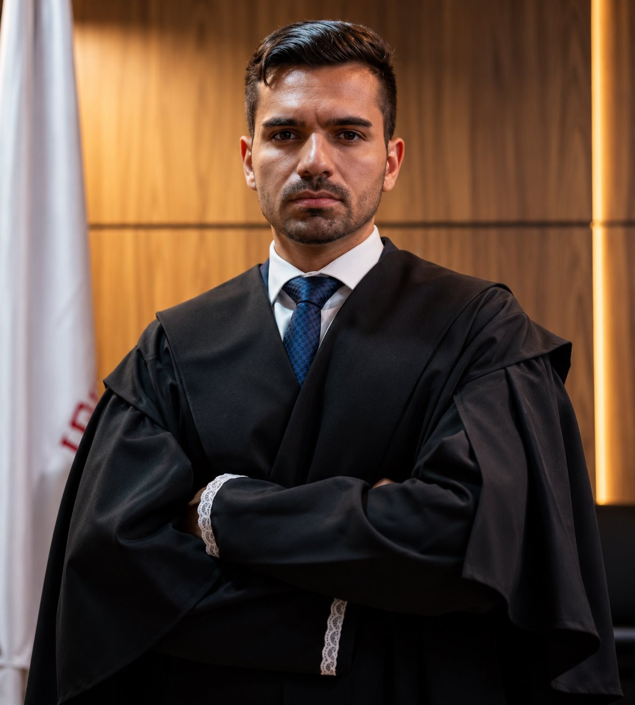
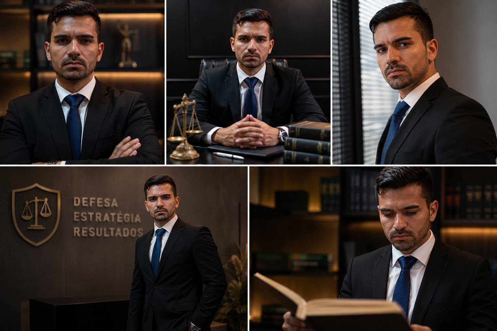

L
Dra. Laura Corrêa★★★★★ · Google
“Como advogado criminalista, o Dr. André é experiente e muito profissional, informando o cliente do que é necessário a ser feito.”
Advocacia criminal • Atendimento 24h
Estratégia, discrição e presença quando cada decisão importa. Atendimento direto em todo o Estado de São Paulo.

Proteção técnica e humana
Uma acusação criminal muda a rotina de uma família inteira. A resposta precisa unir rapidez, conhecimento técnico e uma comunicação transparente.
O Dr. André Costa Lima atua de forma estratégica em casos criminais, acompanhando cada etapa com proximidade e respeito absoluto às garantias individuais.
Explique seu caso com segurança ↗Avaliações públicas no Google
“Como advogado criminalista, o Dr. André é experiente e muito profissional, informando o cliente do que é necessário a ser feito.”
“Super atencioso, esclareceu todas as minhas dúvidas. Recomendo os seus serviços advocatícios!”
“Ótimo atendimento. O Dr. me orientou e deu tudo certo, graças a Deus.”
“Escritório confortável e o atendimento foi rápido. Recomendo.”
Avaliações públicas consultadas no Google. Depoimentos refletem experiências individuais.
Ver avaliações no Google ↗Áreas de atuação
Atuação especializada, do primeiro atendimento aos recursos perante os tribunais superiores.
Atuação imediata, acompanhamento em delegacia e audiência de custódia.
Defesa técnica em primeira e segunda instâncias, com estratégia definida caso a caso.
Medidas para proteção da liberdade e pedidos de revogação de prisão preventiva.
Recursos e acompanhamento perante os tribunais superiores em Brasília.
Defesa em acusações de estelionato, furto, roubo e delitos correlatos.
Tráfico de drogas, violência doméstica, lavagem de capitais e casos de repercussão.
Presença e preparo
Atuação técnica com atenção integral aos detalhes que podem mudar o rumo de um caso.

Uma defesa forte começa com escuta, clareza e ação no tempo certo.
Atendimento criminal 24 horas
Fale diretamente com o Dr. André e receba orientação sobre os próximos passos.